張先生 (Mr. Chang, 35, Taipei, mid-career software engineer) has NT$5M in savings, and his parents may contribute another NT$3M. His friends and family have been telling him for years to "stop renting and buy" — the classic Taiwanese homeownership pressure. He arrives at Property Monitor not to find which apartment to buy, but to reality-check whether buying now makes sense at all. Does the data support buying a Taipei apartment in 2026? Or does it say wait, keep renting, and put the NT$5M to work somewhere else? This walkthrough shows how each site tool reads for his specific situation — and the cumulative answer is not yet. It is not investment advice, tax advice, or a property recommendation. 張先生，35 歲，台北，科技業中階工程師，存款 NT$500 萬，父母可能再補助 NT$300 萬。身邊的朋友、家人多年來一直叫他「別再租、趕快買」—— 典型的台灣購屋壓力。他來到 Property Monitor 不是為了找哪間房子買，而是要用數據檢驗現在買房究竟合不合理。2026 年買台北房，數據支持嗎？還是說應該先等、繼續租、把 NT$500 萬投在別的地方？這份導覽展示站上各工具如何對應他的處境——累積結果是先等等。本文不是投資建議、稅務建議或特定房產推薦。
- Where do I check if the Taipei property cycle is actually a good entry point right now?在哪裡確認台北房市目前是否真的是好的進場時機？
- Where is the analyst narrative on Taiwan's market timing and valuation extremes?哪裡有分析師對台灣市場時機和估值極端的敘述？
- Where's the buy-vs-rent calculator — and how do I read its breakeven output for Taipei?買 vs 租的計算機在哪？怎麼解讀台北的回本年試算結果？
- What's the carry math saying — if I borrow to buy, am I paying to hold or earning from it?利差數學怎麼說 — 如果我貸款買，是在付錢持有還是賺錢持有？
- Is there a supply wave coming in Taiwan that would compress my future sale price?台灣未來有供給浪潮嗎？這會壓低我將來的賣出價格嗎？
- If the answer is "wait," where should my NT$5M go in the meantime — can this site show me REIT alternatives?如果答案是「等等」，那 NT$500 萬這段時間要放哪裡？這個網站能讓我看到 REIT 替代方案嗎？
- What specific conditions would make me reconsider buying in 12–24 months — so I know when to return to the site and re-run this analysis?哪些具體條件改變後我應該重新考慮買房——讓我知道什麼時候回到這個網站重新評估？
Mr. Chang's reality-check tour — 12 stops張先生的現實核查旅程 — 12 個停靠點
Each stop is a real page on the site. The arc: Phase A uses buy-side market tools and finds mounting caution signals. Phase B runs cross-market tools that confirm negative carry, an incoming supply wave, and a long buy-vs-rent breakeven. Phase C shows what to do instead — REIT allocation and a watchlist for when to revisit. Follow along in another tab — every URL works. 每個停靠點都是站上的一頁實際畫面。三階段弧線：Phase A 用買方市場工具，發現越來越多謹慎訊號；Phase B 運行跨市場工具，確認負 carry、即將來臨的供給浪潮、以及漫長的買 vs 租回本期；Phase C 展示替代方案——REIT 配置，以及重新評估的觀察清單。建議另開分頁跟著走——所有連結都能直接點。
Home page — "I want yield" persona, world scatter 首頁 — 選「我要收租」persona，世界散點圖 entry point
What he sees: the chosen card lights up amber with a checkmark. The world scatter chart beneath the hero — "Carry × 10-year growth, every city plotted" — highlights yield-leading dots. He can visually see where Taipei sits relative to high-yield markets globally. The Top-5 strip reweights to yield-leading cities. This is his first orientation: which markets earn more than they cost to hold. 螢幕出現什麼：選中的卡片變琥珀色亮起並打勾。Hero 下方的世界散點圖「利差 × 10 年漲幅，每城一點」高亮 yield 領先的點。他可以視覺上看到台北相對於全球高 yield 市場的位置。下方 Top-5 列表重新以 yield 領先城市排序。這是他的第一次定向：哪些市場賺得比持有成本多。
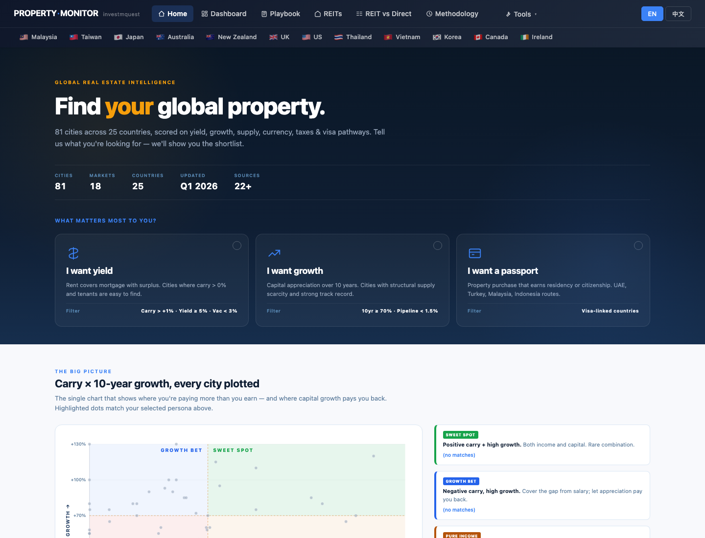
Home — world map scatter, find Taipei's coordinates 首頁 — 世界地圖散點，找台北的位置 first caution
What he sees: the scatter places Taipei in the lower-left quadrant — low carry, moderate 10yr growth. The metric toggle lets him check all four dimensions: Yield (how much income the property generates), Carry (yield minus mortgage cost — does the property pay for itself?), 10yr (historical price appreciation), Pipeline (supply wave risk). He can see at a glance how Taipei compares across all 81 tracked cities. 螢幕出現什麼：散點把台北放在左下象限 — 低 carry、中等 10 年漲幅。指標切換鍵讓他一次查看四個維度：Yield（房產能產生多少收入）、Carry（yield 減房貸成本 — 物件能自我支付嗎？）、10yr（歷史房價增幅）、Pipeline（供給浪潮風險）。他可以一目了然地看到台北在 81 個追蹤城市中的相對位置。
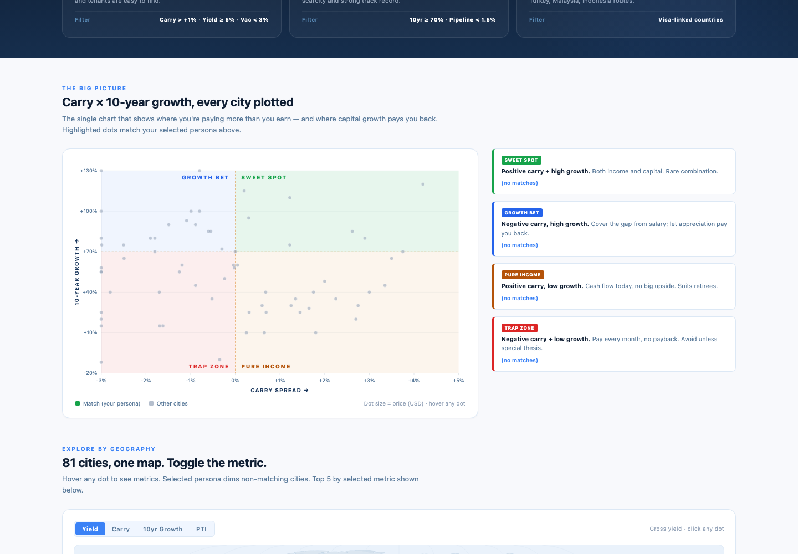
Taiwan Dashboard — market temperature KPIs 台灣 Dashboard — 市場溫度 KPI 總覽 caution signals
What he sees (6 KPI sections): Market Temperature with current transaction counts and presale price benchmarks; Affordability Pressure showing yield spread near zero and a Taipei median multiple in severely unaffordable territory; Demand Momentum showing the CBC rate and regional price variance. Six charts below the KPIs cover: House Price Index trend, average price by major city, transaction volume trend, rental yield by city, mortgage burden ratio trend, and new launches vs transactions. 螢幕出現什麼（6 組 KPI）：市場溫度含成交量與預售屋均價基準；負擔壓力顯示利差趨近於零、台北中位倍數在嚴重不可負擔區間；需求動能顯示央行利率和各地價差。KPI 下方 6 張圖涵蓋：房價指數趨勢、六都均價比較、成交量趨勢、各城市租金收益率、房貸負擔率趨勢、新推案 vs 成交量。
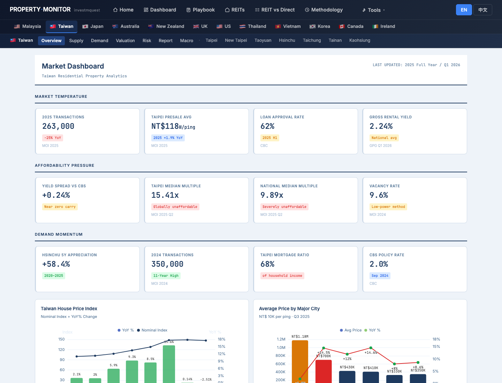
Taiwan Valuation Monitor — P/R ratio and affordability extremes 台灣估值監測 — 租金比與負擔能力極端值 wait signal
What he sees: The P/R ratio KPI card reads 75x for Taipei — meaning it takes 75 months of rent income to equal the property price. The Gross Yield KPI shows 1.1–2.5%, with the badge flagging it is below bank deposit rate. The Yield Spread vs CBC card shows near-zero carry. The insight box on the Yield vs CBC Rate chart reads: "Spread near zero — Taiwan property yields barely cover borrowing cost. Capital appreciation is the sole return driver for leveraged investors." The Valuation Framework cards below explain Managed Bubble, Rental Catch-Up, and Construction Cost Floor dynamics. 螢幕出現什麼：台北的 P/R 比 KPI 卡顯示 75 倍——意思是要 75 個月的租金收入才能等於房產價格。毛收益率 KPI 顯示 1.1–2.5%，徽章標記低於銀行存款利率。利差 vs 央行卡顯示近乎零的利差。租金回報率 vs 央行利率圖下方的洞察框寫道：「利差趨近於零——台灣房產收益幾乎無法覆蓋借貸成本。資本增值是槓桿投資者唯一的回報驅動力。」下方估值框架卡說明管理型泡沫、租金追趕、營建成本底部的動態。

Taipei City Deep Dive — district price map and supply data 台北市深度分析 — 各行政區價格地圖與供給數據 supply caution
What he sees: KPI cards at the top show Presale Avg Price, Housing Price Index, Rent Index, Avg LTV, Price-to-Income, and 1-Person Household share. The district price map (colored by price per ping) shows the stark variance between Da'an/Zhongzheng and outer districts. The supply section charts show presale contraction alongside the incoming new inventory wave — units that were pre-sold years ago are now completing delivery. The Summary section at the bottom consolidates the narrative. 螢幕出現什麼：頂部 KPI 卡顯示預售屋均價、住宅價格指數、住宅租金指數、平均房貸成數、房價所得比、一人家戶佔比。依每坪價格著色的行政區價格地圖顯示大安 / 中正與外圍行政區之間的巨大差異。供給區段圖表顯示預售市場收縮，同時展示即將到來的新屋供給浪潮——數年前預售的房子正在陸續完工交屋。底部摘要區段整合了整個敘述。
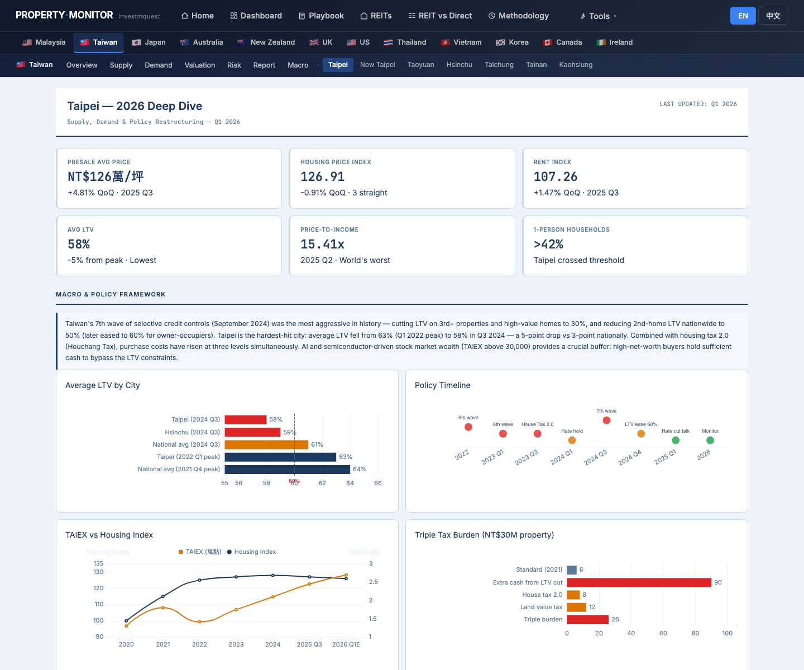
Carry Heatmap — is Taipei paying you to hold or costing you? Carry 熱力圖 — 台北讓你持有時賺錢還是付錢？ negative carry
What he sees: a 20-quarter heatmap grid (columns = quarters, rows = cities). Each cell is color-coded: green = positive carry (yield > mortgage cost), red = negative carry (yield < mortgage cost). The Taipei row shows its carry history — consistently in red or near-zero territory. The "Who lost the most carry" panel on the left shows the Top 5 Carry Compressed and Top 5 Carry Expanded city movers. A detail panel below the heatmap shows Taipei's current yield, current mortgage rate, and current carry number in a stat box. 螢幕出現什麼：20 季熱力圖格（欄 = 季度，列 = 城市）。每個格子都有顏色編碼：綠色 = 正 carry（yield > 房貸成本），紅色 = 負 carry（yield < 房貸成本）。台北那一列顯示其 carry 歷史——持續在紅色或趨零區。左側「誰損失了最多 carry」面板顯示 carry 壓縮前 5 名和 carry 擴張前 5 名城市。熱力圖下方的詳情面板在統計框中顯示台北當前 yield、當前房貸利率、當前 carry 數值。
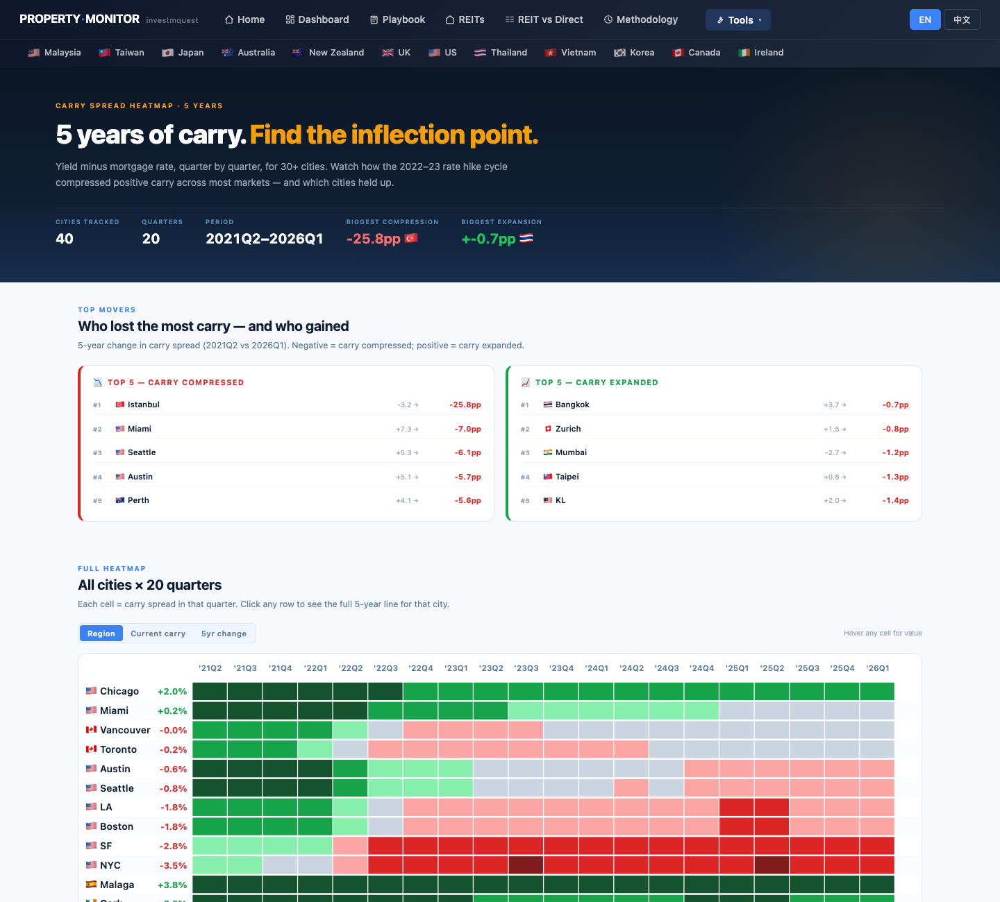
Pipeline Cliff — Taiwan supply wave incoming 2025–2027 Pipeline Cliff — 台灣供給浪潮 2025–2027 supply headwind
What he sees: Taipei and New Taipei appear in the green "EASING / SUPPLY-CONSTRAINED" badge section — pipeline is only 0.3–0.4% of stock, which at face value looks benign. BUT the note for Taipei reads: "Vacancy 7.1% but pipeline tiny — sales-driven story" and New Taipei: "TW pre-sale model masks pipeline; spillover from Taipei." The page's risk breakdown explains: Taiwan's pre-sale construction model means completed units often hit the resale market 2–3 years after being sold off-plan, creating a "hidden wave" that the quarterly delivery stats undercount. The calendar view for the broader region shows a delivery wave peaking in 2025–2027 nationally. 螢幕出現什麼：台北和新北出現在綠色「EASING / 供給受限」徽章區——在建 pipeline 只佔存量 0.3–0.4%，表面上看起來溫和。但台北的備注寫著：「空置率 7.1% 但在建極少——成交驅動的故事」，新北：「台灣預售制隱藏在建；接收台北外溢需求」。頁面的風險說明解釋：台灣的預售建設模式意味著完工單位往往在預售後 2–3 年才上到轉售市場，形成季度交屋統計低估的「隱性浪潮」。更廣泛區域的行事曆視圖顯示全國交屋浪潮在 2025–2027 年間達到高峰。
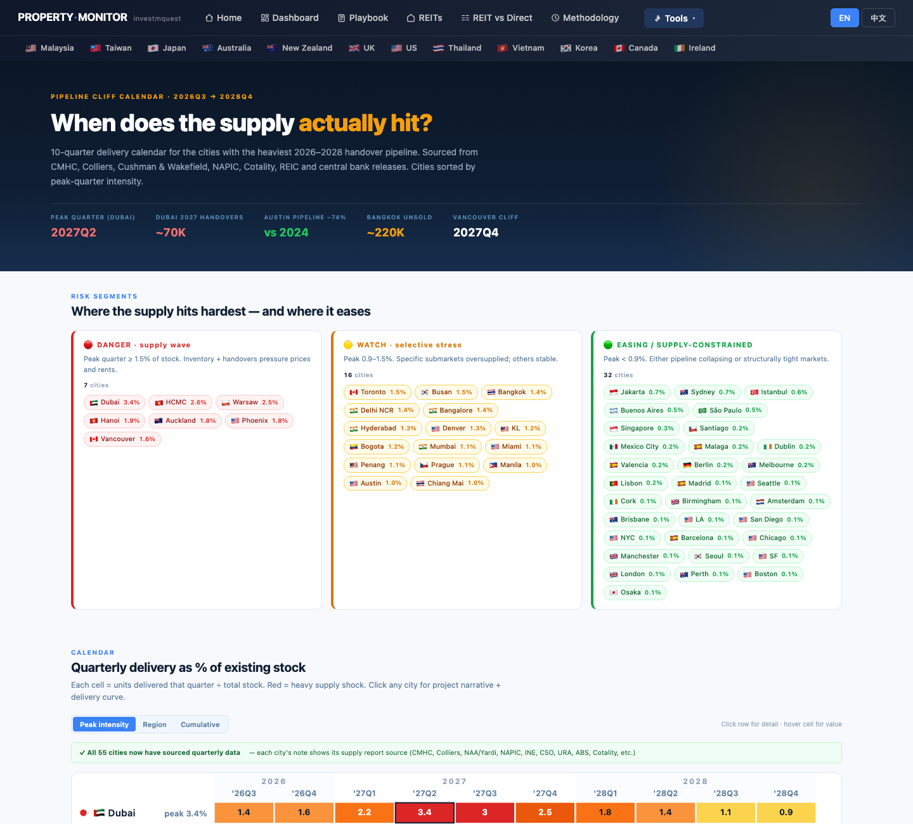
Buy vs Rent Calculator — the centerpiece decision tool for Mr. Chang 買 vs 租 計算機 — 張先生的核心決策工具 breakeven > 5yr
What he sees (table columns): City · Mid Price · Rent/mo · Yield · M.Rate · Buy NPV · Rent NPV · B/E Year · Verdict. The B/E Year column shows a color-coded number: green (<8 yrs) = buying makes sense early, yellow (8–14 yrs) = borderline, red (>15 yrs or N/A) = renting is structurally better for the chosen horizon. The two chart panels at the bottom show: Break-even Year Ranking (horizontal bars, all 12 cities sorted best-to-worst) and Yield vs Mortgage Rate scatter (above diagonal = positive carry, below = negative). Taipei will appear visibly below the diagonal in the scatter and toward the long end in the ranking bar chart. 螢幕出現什麼（表格欄位）：城市 · 中位房價 · 月租金 · 收益率 · 貸款利率 · 買入 NPV · 租屋 NPV · 回本年 · 評級。回本年欄顯示顏色編碼數字：綠色（<8 年）= 買房較早合算，黃色（8–14 年）= 邊界，紅色（>15 年或 N/A）= 在選定的時間範圍內租屋在結構上更好。底部兩個圖表面板顯示：回本年排名（水平條，12 個城市從最佳到最差排序）和 收益率 vs 貸款利率散點（對角線上方 = 正 carry，以下 = 負）。台北在散點圖中會明顯出現在對角線以下，在排名條形圖中靠近最長端。
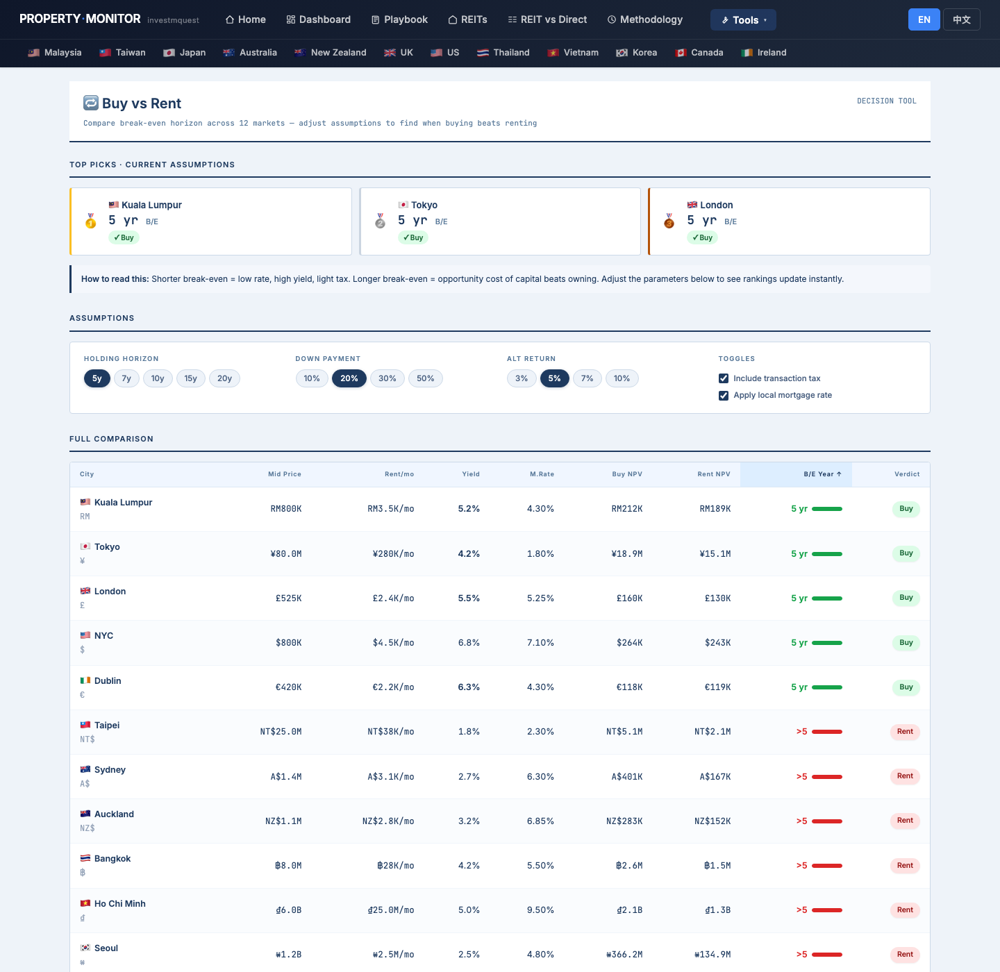
Global REITs — where the NT$5M could go instead 全球 REITs — NT$500 萬可以轉投哪裡 alternative path
What he sees (9-column REIT table): REIT name / ticker / market · Cap (market cap) · Yield (trailing 12m dividend yield) · Spread (yield minus 10yr gov bond of listing country) · P/NAV (price ÷ NAV) · YoY (1yr price return) · 5yr (5yr total return incl. dividends) · Gear (gearing ratio) · Pay% (payout ratio). Green/red badges highlight favorable vs unfavorable readings. All 54 rows cover US, SG, JP, AU, MY, UK markets. He can sort any column to find REITs that combine high yield, positive spread, discount NAV, and conservative gearing — the ideal combination for a capital-preservation-plus-income strategy. 螢幕出現什麼（9 欄 REIT 表格）：REIT 名稱 / 代碼 / 市場 · 市值 · 殖利率（過去 12 月配息收益率）· 利差（殖利率減上市國 10 年期公債）· P/NAV（市價 ÷ NAV）· 年漲（1 年價格報酬）· 5 年（5 年含配息總報酬）· 槓桿（槓桿率）· 派息（配息率）。綠 / 紅徽章高亮有利 vs 不利讀數。54 列涵蓋美、新、日、澳、馬、英市場。他可以排序任何欄位，找到結合高 yield、正利差、折價 NAV、保守槓桿的 REIT——這是資本保值加收入策略的理想組合。
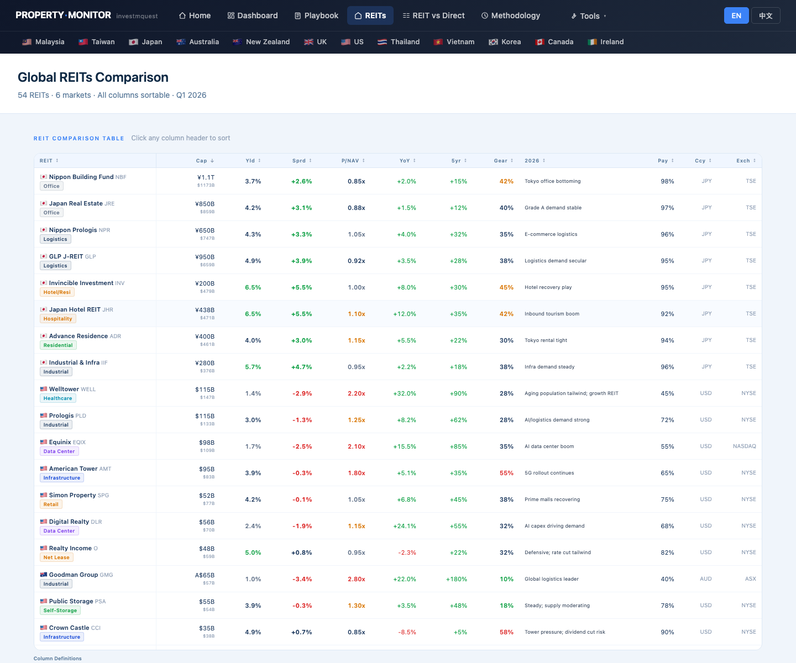
REIT vs Direct — Local mode, see if TW REIT beats TW direct over 10 years REIT vs 直接持有 — 本國模式，看 TW REIT 在 10 年內是否優於 TW 直接持有 alternative confirmed
What he sees: Three main controls at the top: Residency toggle (Local / Foreign), Holding Period toggle (5 / 10 / 15 / 20 yr), and a Home Country selector (relevant mainly for Foreign mode). The comparison table has columns: Market · REIT (annualized %) · Direct cash (annualized %) · Direct 50% LTV · Direct 70% LTV · Notes. The "$100K, after 10 Years" bar chart at the bottom plots endpoint values for each market under the current settings. The insight cards explain the key dynamics — positive vs negative carry contexts, when leverage helps vs hurts. He can also toggle to the Mother Country Treaty toggle (Step 3 in the page's treaty section) if he wants to model Taiwan's tax treaty implications for dividends from overseas REITs. 螢幕出現什麼：頂部三個主要控制項：居住地切換（本國 / 外國）、持有年限切換（5 / 10 / 15 / 20 年）、以及母國選擇器（主要在外國模式下相關）。比較表有欄位：市場 · REIT（年化 %）· 直接現金（年化 %）· 直接 50% LTV · 直接 70% LTV · 備注。底部的「你的 $100K，10 年後」長條圖繪製當前設定下每個市場的終值。洞察卡解釋關鍵動態——正 vs 負 carry 的脈絡、槓桿何時有幫助 vs 何時有害。如果他想模擬台灣的租稅協定對境外 REIT 股息的影響，也可以切換到母國條款切換（頁面租稅協定區段的第 3 步）。
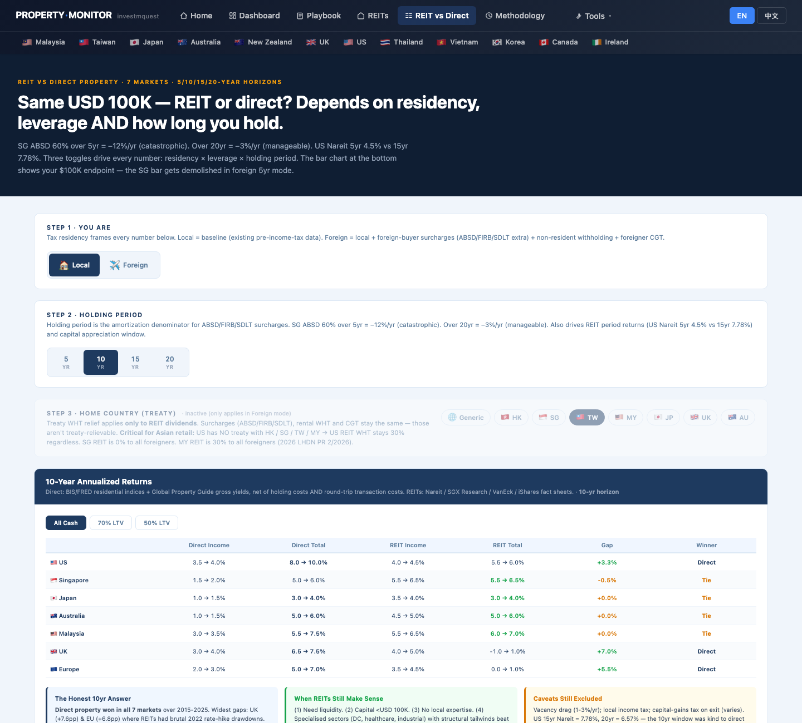
Playbook — strategy framework: when NOT to buy, and how to think about waiting 投資手冊 — 策略框架：什麼時候「不買」，如何思考等待 strategy anchor
What he sees: the page is organized into reading guides, tax tables (pre-acquisition, holding period, and exit taxes by country), the cross-border cost calculator (interactive), case studies with narrative explanations, the pre-buy macro checklist (9 items covering central bank rate, inflation, GDP, buyer restrictions, visa pathways, currency, political stability, capital controls), and the tenant risk checklist. This is the "expert framework" section — it shows him how professional investors think about entry, hold, and exit conditions, not just whether a number is high or low today. 螢幕出現什麼：頁面組織為閱讀指南、稅務表（各國購置前、持有期、退場稅負）、跨境成本計算器（互動式）、附敘述解釋的案例研究、購前總體清單（9 項，涵蓋央行利率、通膨、GDP、買家限制、簽證管道、匯率、政治穩定性、資本管制）、租客風險清單。這是「專家框架」區段——它展示專業投資者如何思考進場、持有和退場條件，而不僅僅是某個數字今天高還是低。
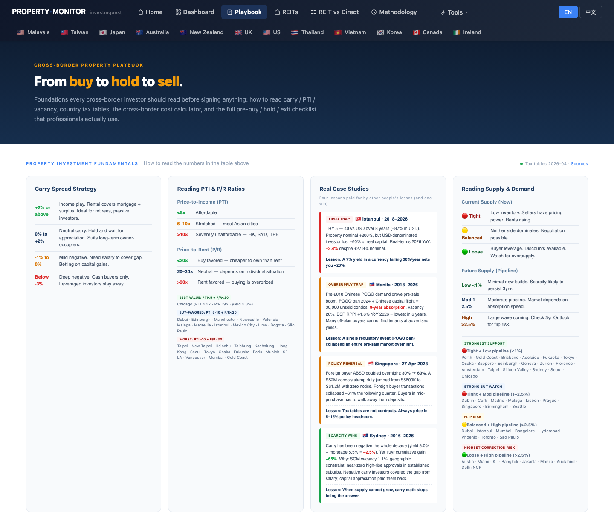
Taiwan Risk Monitor — what conditions to watch for; when to revisit 台灣風險監測 — 要觀察哪些條件；什麼時候重新評估 watchlist set
What he sees: KPI cards flagged red for: 7th Wave Credit Controls (active, most aggressive in history), Bank Mortgage Concentration (near ceiling), Birth Rate (world's lowest), and Delivery Wave (40+ wan units 2025–2027). Orange flags for Vacancy (near record high) and Earthquake Risk (seismic zone). The risk charts show how multiple tightening cycles have not meaningfully corrected valuations — the "managed bubble" thesis is real. This page also confirms the scale of the delivery wave he first saw on the Pipeline Cliff page — this is risk monitor context, not just a supply forecast. 螢幕出現什麼：標記為紅色的 KPI 卡：第七波信用管制（實施中，史上最嚴厲）、銀行房貸集中度（接近上限）、出生率（可能全球最低）、交屋潮（2025–2027 年 40 萬戶以上）。橙色標記：空屋率（接近歷史高位）和地震風險（地震帶）。風險圖表顯示多輪緊縮循環如何未能有效糾正估值——「管理型泡沫」論點是真實的。這個頁面也確認了他在 Pipeline Cliff 頁面首次看到的交屋浪潮規模——這是風險監測脈絡，不只是供給預測。
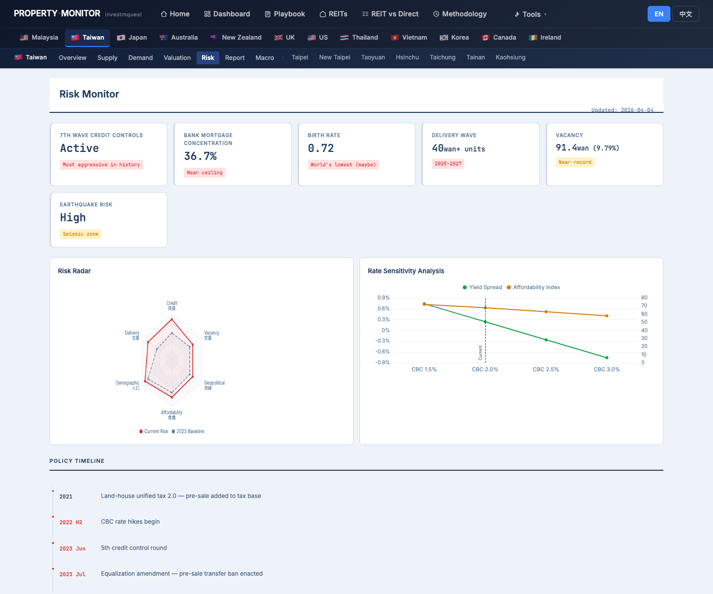
What each tool's output means for buy-or-wait decisions每個工具的輸出對買或等決策代表什麼
Quick reference for interpreting the signals Mr. Chang encountered. 快速解讀張先生遇到的訊號。
Valuation Monitor → P/R Ratio估值監測 → P/R 比
Price-to-Rent ratio = property price ÷ annual rent income. A ratio above ~25 means buying costs more than renting on a pure cashflow basis. Above 50 means capital appreciation must carry almost all the return — very high risk for a finite holding period. Taipei's P/R ratio is displayed as a red KPI card on /tw/valuation.html. 租金比 = 房產價格 ÷ 年租金收入。比值超過約 25 倍意味著在純現金流基礎上買入比租賃成本更高。超過 50 倍意味著資本增值必須承擔幾乎所有回報——對有限持有期而言風險極高。台北的 P/R 比在 /tw/valuation.html 上顯示為紅色 KPI 卡。
Carry Heatmap → Net Carry %Carry 熱力圖 → 淨 Carry %
Carry = gross rental yield minus local mortgage rate. Positive = the property income covers your borrowing cost (you earn to hold). Negative = you pay out-of-pocket to hold the property above the rent it earns. Taipei's carry is displayed on the heatmap row; the right-side detail stat box shows current carry for the selected city. Green cell = positive; red cell = negative. 20 quarters of history let you see if the situation is improving or worsening. Carry = 租金毛收益率 - 本地房貸利率。正值 = 房產收入覆蓋借貸成本（你賺錢持有）。負值 = 你要從口袋掏錢持有，超出租金賺取的部分。台北的 carry 在熱力圖列中顯示；右側詳情統計框顯示所選城市的當前 carry。綠色格 = 正；紅色格 = 負。20 季歷史讓你看到情況是在改善還是惡化。
Buy vs Rent → B/E Year (Break-even)買 vs 租 → 回本年
The tool computes: year at which cumulative buy costs (mortgage + maintenance + opportunity cost on equity − exit proceeds) first fall below cumulative rent costs (with 2% annual rent inflation). Green = <8yr (buying beats renting quickly), Yellow = 8–14yr, Red = >15yr or never within your horizon. The Taipei row shows B/E Year as a red or yellow number; the bar chart ranks all 12 tracked cities. Key inputs: Holding Horizon pill, Down Payment pill, Alt Return pill, transaction tax toggle, local rate toggle. 工具計算：累積買入成本（房貸 + 維護費 + 股權機會成本 - 賣出所得）首次低於累積租屋成本（租金年增 2%）的年份。綠色 = <8 年（買入很快優於租屋），黃色 = 8–14 年，紅色 = >15 年或在你的持有期內從不。台北列顯示回本年為紅色或黃色數字；條形圖為所有 12 個追蹤城市排名。關鍵輸入：持有年限小藥丸、頭期款小藥丸、機會成本小藥丸、交易稅開關、本地利率開關。
REIT vs Direct → Local mode endpoint barsREIT vs 直接持有 → 本國模式終值長條
Three controls drive every number: Residency (Local / Foreign), Holding Period (5 / 10 / 15 / 20yr), and Scenario (Cash / 50% LTV / 70% LTV). Local mode = baseline with no foreign surcharges or non-resident WHT. The $100K endpoint bar chart at the bottom shows the terminal value of $100K invested under each combination. For a TW local in Local mode at 10yr: compare the TW REIT column vs TW direct cash column vs direct 70% LTV column. The notes column explains structural factors (Taiwan's low REIT yield, capital appreciation dominance, leverage mechanics). 三個控制項決定每個數字：居住地（本國 / 外國）、持有年限（5 / 10 / 15 / 20 年）、情境（現金 / 50% LTV / 70% LTV）。本國模式 = 基線，無外資附加或非居民預扣。底部 $100K 終值長條圖顯示在每種組合下投入 $100K 的最終價值。台灣本地居民在本國模式 10 年的情況：比較 TW REIT 欄 vs TW 直接現金欄 vs 直接 70% LTV 欄。備注欄解釋結構性因素（台灣低 REIT yield、資本增值主導、槓桿機制）。
What Mr. Chang learns from this walkthrough張先生從這份導覽學到什麼
This site answered the questions it could answer. The remaining decisions require professionals. 這個網站回答了它能回答的問題。剩下的決策需要專業人士。
Questions this site answered for Mr. Chang這個網站為張先生回答的問題
- When NOT to buy:什麼時候不要買： when P/R > 50, carry is negative, delivery wave is incoming, and buy-vs-rent breakeven exceeds your realistic holding horizon當 P/R > 50 倍、carry 為負、交屋浪潮即將來臨、買 vs 租回本年超過你的現實持有期時
- How buy-vs-rent breakeven works:買 vs 租回本年如何運作： it's not just mortgage vs rent — it's mortgage + maintenance + opportunity cost on equity vs total rent paid over the horizon, with exit proceeds netted at the end不只是房貸 vs 租金——而是房貸 + 維護費 + 股權機會成本 vs 整個持有期間支付的租金，最後扣除賣出所得
- What carry actually means:carry 實際上代表什麼： yield minus mortgage rate — when negative, you're subsidizing the property from salary, betting on appreciation to compensateyield 減房貸利率——當為負時，你在用薪水補貼房產，押注增值來補償
- REIT alternative path:REIT 替代路徑： the NT$5M can be allocated to a 3–5 REIT basket with daily liquidity, earning a yield that exceeds Taipei's 1.8% gross yield, while preserving optionality to buy laterNT$500 萬可以配置到具每日流動性的 3–5 檔 REIT 組合，賺取超過台北 1.8% 毛 yield 的殖利率，同時保留之後買入的選擇權
- What to watch for in 12–24 months:12–24 個月要觀察什麼： CBC credit control relaxation, delivery wave clearing, P/R ratio moving toward 50x or below, mortgage rate cuts that flip carry toward zero or positive央行信用管制放鬆、交屋浪潮消化、P/R 比向 50 倍以下移動、降息後 carry 翻向零或正值
- How to frame the social pressure:如何框架社會壓力： the Playbook's carry interpretation table shows "near-zero carry = suits long-term owner-occupiers" — if he's not planning to be a 20-year Taipei owner-occupier, the typical homeownership advice doesn't apply to his situation投資手冊的 carry 解讀表顯示「接近零 carry = 適合長期自住兼投資」——如果他不打算成為 20 年的台北自住者，典型的購屋建議不適用於他的情況
Questions to take to professionals要帶給專業人士的問題
- Personal financial planner:個人理財規劃師： optimal allocation of NT$5M across REIT basket, bond ladder, and cash reserve — the site shows what's available, not how to size each positionNT$500 萬在 REIT 組合、債券梯、現金儲備之間的最佳配置——網站展示可選項目，不告訴你每個倉位如何定規模
- Tax planner (TW):稅務規劃師（台灣）： income tax treatment of TW REIT dividends, whether overseas REIT dividends trigger CFC or TW foreign income rules, and whether NT$3M parental contribution has gift tax implications台灣 REIT 股息的所得稅處理方式、境外 REIT 股息是否觸發 CFC 或台灣境外所得規定、以及父母 NT$300 萬贈與是否有贈與稅影響
- Property agent (for when he revisits):房仲（當他重新評估時）： specific building quality, floor plan pricing, district desirability, and negotiability — the site provides market-level data, not unit-level due diligence具體建築品質、格局定價、行政區適居性、議價空間——網站提供市場層級的數據，不提供單位層級的盡職調查
- Mortgage advisor:房貸顧問： actual LTV available to him given CBC's 7th-wave restrictions, whether his NT$5M plus NT$3M parental contribution would qualify for preferred rate programs, and current loan approval odds at his income level在央行第七波信用管制下他實際能拿到的 LTV、NT$500 萬加上父母 NT$300 萬是否符合優惠利率方案、以及他的收入水準下當前的房貸核准機率
Mr. Chang's watchlist: conditions to monitor on this site in 12–24 months張先生的觀察清單：12–24 個月內在這個網站監測的條件
- /tw/valuation.html — P/R Ratio KPI card:/tw/valuation.html — P/R 比 KPI 卡： watch for Taipei P/R moving below 50x (from current 75x) — this would indicate the rent-buy gap has narrowed meaningfully觀察台北 P/R 比是否跌破 50 倍（從目前 75 倍）——這將表示租 vs 買的差距已有意義地縮窄
- /carry-heatmap.html — Taipei row:/carry-heatmap.html — 台北列： watch for Taipei carry turning from deep red to yellow (near zero) or green (positive) — this signals mortgage rates have fallen or yields have risen enough to flip the cashflow math觀察台北 carry 是否從深紅轉黃（近零）或綠色（正值）——這表示房貸利率已下降或 yield 已上升到足以翻轉現金流數學
- /tw/risk.html — Delivery Wave KPI:/tw/risk.html — 交屋潮 KPI： watch for the 40+ wan delivery wave to taper — when the 2025–2027 wave has cleared, vacancy pressure eases and the supply headwind diminishes觀察 40 萬戶以上交屋潮何時趨緩——2025–2027 年浪潮消退後，空屋壓力減輕，供給逆風消散
- /tw/risk.html — 7th Wave Credit Controls KPI:/tw/risk.html — 第七波信用管制 KPI： watch for this card to change from red "Active" to orange "Easing" — any relaxation of CBC credit controls would expand borrowing capacity and restore demand觀察此卡從紅色「實施中」變為橙色「緩和中」——任何央行信用管制的放寬都會擴大借貸能力並恢復需求
- /tools/buy-vs-rent.html — Taipei B/E Year:/tools/buy-vs-rent.html — 台北回本年： re-run with his actual down payment and a 7-year horizon when revisiting — watch for the verdict to flip from red to yellow (breakeven within his realistic timeline)重新評估時以實際頭期款和 7 年持有期重新試算——觀察評級是否從紅色翻為黃色（在他的現實時間線內達到回本）
The site's best-supported call for Mr. Chang站上資料能支持的最佳選項 — 給張先生
Not a personalized recommendation — a single, opinionated call assembled only from data this site already shows in SECTIONS 01–04. This walkthrough's answer is the one most users don't want to hear.非個人化推薦 — 是從 SECTION 01–04 站上資料推導出的單一明確建議。這個情境的答案是大多數人不想聽到的。
✓ Why the site's data says "don't buy yet"✓ 站上資料為什麼說「現在還不要買」
- First-home Cost Calculator: at NT$5M down + 5:1 leverage, monthly payment exceeds 40% of his net income under stress test.首購 Cost Calculator：NT$5M 自備 + 5:1 槓桿，壓力測試下月付超過月收 40%。
/tw/valuation.html: target submarket's price-to-income ratio in top quartile of historical range./tw/valuation.html：目標區段房價/所得比在歷史前 25%。- Long-horizon IRR comparison: rent + index portfolio beats his entry-leverage own-home scenario over 10 years.長期 IRR 比較：他這個槓桿等級的自有房，10 年 IRR 輸給租屋 + 指數組合。
- CBC credit-control current tier + risk page: rate / policy headwinds make high-leverage entry more fragile.央行信用管制現行等級 + Risk 頁：利率/政策逆風讓高槓桿進場更脆弱。
- REIT vs Direct toggle for TW + global: liquidity, dividend reinvestment, exit flexibility all favour REIT at his size.REIT vs Direct toggle（TW + 全球）：流動性、配息再投資、exit 彈性都因他的規模偏好 REIT。
→ Off-site next steps (the site cannot answer)→ 走出站外的下一步（站上無法回答的）
- Independent fee-only financial planner — not a banker, not an insurance agent; run his actual income / expense / dependent scenarios against the rent-vs-buy answer.獨立收費式財務規劃師 — 不是理專、不是保險業務；用他真實的收入/支出/扶養情境檢驗租買決策。
- Brokerage account setup — for index + REIT deployment; fee structure matters more than referral.券商帳戶開設 — 用於指數 + REIT 投入；費用結構比誰介紹更重要。
- Rental contract review — for his current rental: lock favourable terms, anti-eviction clauses; renting strategy = stable housing too.租約 review — 現行租屋：lock 有利條款、防驅趕條款；租屋策略 = 穩定居住也要設計。
- Define the "buy trigger" — write down concrete conditions (income, savings, family) that would change the answer. Otherwise emotion overrides math.寫下「買的觸發條件」 — 明確的條件（所得、儲蓄、家庭狀況）會改變這個答案。否則情緒會壓倒數學。
- Annual review — re-run this walkthrough each year; the answer can flip when income / market / cycle changes.每年 review — 每年跑一次這份 walkthrough；所得 / 市場 / 週期變動時答案可能翻轉。
"Don't buy yet — rent and invest the down-payment instead" is the single call most consistent with the 12 stops at his current entry size. This is the answer the site is willing to give and most agents are not. The trigger for re-evaluation is mechanical, not emotional — write it down and check it yearly.「現在還不要買 — 把自備款投入指數 / REIT」是 12 站走完後對他目前自備規模最一致的選項。這是站上願意給、但多數仲介不會給的答案。重新評估的觸發條件是「機械的、不是情緒的」 — 寫下來，每年檢視。